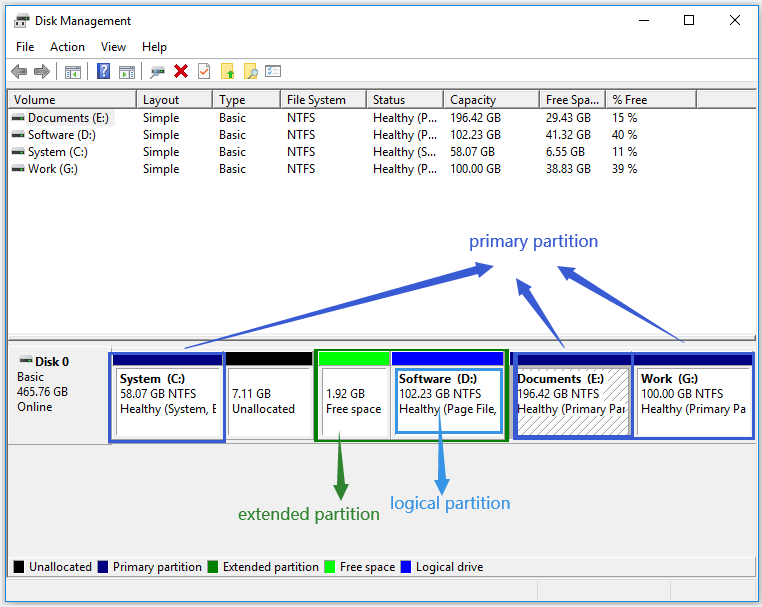

基于卷做的备份/恢复有较大局限性，例如对于文件系统使用率比较低的场景，使用卷备份会导致磁盘利用率低；例如文件系统中文件普遍比较大的场景，卷备份也难以发挥出性能优势。但是卷备份在特定场景下也有不小的优势：卷备份主机硬盘取证的领域都是常见的业务，通过备份整卷可以获得很高的备份/恢复速度，备份系统卷可以直接恢复操作系统。本系列以卷备份作为专题，介绍卷的基本概念以及备份恢复及后续数据利用的几种解决方案。
卷、分区、磁盘的基本概念
作为本系列第一章，本文先介绍什么是卷。卷（Volume）分区（Partition）以及硬盘（Hard disk）是一组常常被混淆的概念。硬盘是物理上的概念，通常常用的硬盘有机械硬盘（Hard Disk Drive）和固态硬盘（Solid State）等，本文则不做详述。卷和分区都是存储区域，两者相似但不相同：卷是一个拥有单一文件系统的可访问的存储区域，分区是一个硬盘上划分出的一部分。这句话意思是，分区往往是一个具体的概念，存在于具体磁盘上的某一连续的具体区域，分区可以不带文件系统（通常没有被初始化的RAW分区也算分区）。卷则是一个抽象的概念，它必须和单一文件系统强关联，且一个卷可能存在于一个或多个磁盘中。由于卷是逻辑的概念，对于Linux/Windows操作系统会表现出差异性，而物理分区则是构成逻辑卷的基础，所以先从分区谈起。
分区
无论是Linux还是Windows，划分硬盘分区都使用GPT或者MBR分区表，每张磁盘都仅仅支持一个分布表用于定义磁盘布局，它们有MBR和GPT两种：
- 主引导记录(Master Boot Record)：MBR是一种Windows上常见的较老的分区模式，在硬盘头部占用512字节。由于MBR使用32字节标记逻辑块地址，按照每块512KB计算，MBR分区有最大2TB的限制。MBR支持的分区数也很有限，最大支持四个主分区（Primary Partition）或者三个主分区带一个扩展分区（Extend Partition）。使用MBR分区的系统盘只能以BIOS(Legacy)的方式引导。
- GUID分区表(GUID Partition Table)：GPT是较新的一种分区模式，在硬盘头部和尾部都占用部分空间且可以扩展。GPT能突破MBR的种种限制，支持高达128个主分区，分区大小能达到9.4ZB。使用GPT作为分区表的系统盘使用EFI引导，需要BIOS支持EFI（一般现代计算机都已经支持EFI）。
GPT分配的每个分区都是主分区，MBR可以分配4主或者3主+1扩展，而扩展分区上又可以进一步划分逻辑分区（Logical Partition）。谈论主分区、扩展分区、逻辑分区一般都是就Windows + MBR的场景而言：
- 主分区：最多4个。需要分配驱动器号，可以用作系统盘
C:\ - 扩展分区：最多1个，其中可以再包含若干逻辑分区。
- 逻辑分区：只能用于存放数据信息，不可用于系统盘。可以不分配驱动器号。

卷
卷是建立在分区之上更加抽象的概念，一个卷可以占用一个或多个分区，可以占用不在同一块硬盘上的不同分区，所以卷永久远超分区的扩展性。即使MBR只支持2TB的分区，也可以通过卷创建更大的文件系统。由于卷是逻辑上的概念，不同操作系统对于卷的概念的定义、实现和管理都不一致。
LDM、基础磁盘与动态磁盘
Windows引入了基础磁盘（Basic Disk）和动态磁盘（Dynamic Disk）的概念。对于Windows而言，卷和分区的显著差别是：分区是创建在基础磁盘之上的，而卷是创建在动态磁盘之上的。在Windows的磁盘管理中可以设置磁盘是基础磁盘或是动态磁盘： 。右击磁盘可以选择将基础磁盘转变为动态磁盘，整个转化过程是无损的。相反，将动态磁盘转为基本磁盘则是不支持的（需要借助三方工具）。动态磁盘的头部和尾部区域都被写入了特定的元数据用于描述动态磁盘的分区布局以支持更强大的可扩展性。基于动态磁盘创建的卷有如下几种类型：
。右击磁盘可以选择将基础磁盘转变为动态磁盘，整个转化过程是无损的。相反，将动态磁盘转为基本磁盘则是不支持的（需要借助三方工具）。动态磁盘的头部和尾部区域都被写入了特定的元数据用于描述动态磁盘的分区布局以支持更强大的可扩展性。基于动态磁盘创建的卷有如下几种类型：
- 简单卷（Simple Volume）：占用一个磁盘上的一个分区。简单卷是个人PC上最常见的卷，通过Windows磁盘管理器右击RAW分区创建简单卷。
- 镜像卷（Mirrored Volume）：使用位于两个不同硬盘的副本来保持数据冗余，所有的写操作都会在两个磁盘上分别进行。镜像卷可以实现数据容灾，在一个硬盘不可用时依然保障数据安全。
- 条带卷（Striped Volume）：又称RAID0，使用两个以上磁盘的分区创建逻辑卷，每次写操作只会在一个磁盘上进行。提供多通道数，可以提高I/O吞吐量。不提供数据冗余，不能实现容灾，且任意磁盘损坏都会导致数据丢失，是可靠性最低的一种卷。
- 跨区卷（Spanned Volume）：通过把多个磁盘的分区合并成一个逻辑卷，分区之间有先后顺序，之后之前的分区用满了才会用下一个分区。可以提升卷容量。不提供数据冗余，不能实现容灾。
- RAID-5卷：通过使用三个及以上的磁盘，统合条带卷、跨区卷和镜像卷的优势，维护数据多副本冗余，可以在部分磁盘失效后快速恢复数据。既能提高吞吐量，又能扩展卷空间，还能容灾。
Windows上的卷一般通过LDM（Logical Disk Manager）管理，LDM基于Basic Disk/Dynamic Disk机制实现，通过在硬盘的头尾写入特定元数据，记录动态磁盘的相互关系从而构成逻辑卷。
无论动态磁盘还是基础磁盘，都有分区表，且都是MBR/GPT其一。
LVM与DeviceMapper
而Linux上的卷一般通过LVM（Logical Volume Manager）管理，LVM提供从多个块设备创建LVM卷、管理卷组、弹性扩容、打快照等能力，底层依赖于Linux的DeviceMapper。DeviceMapper可以从多个块设备中创建类似Windows上几类逻辑卷：mirror、stripped、linear(Windows的Spanned Volume)、RAID。此外，DeviceMapper还可以用于实现加密文件系统的加密层。有关DeviceMapper的CLI程序dmsetup的使用方法可以参考：Appendix A. The Device Mapper
DeviceMapper创建的设备一般位于/dev/dm-X，被软连接链接到/dev/mapper/$dmDevName
/dev/dm-X形如/dev/dm-0，/dev/dm-1…./dev/mapper/$dmDevName中的$dmDevName标记一个DeviceMapper设备的唯一名称。发送给DeviceMapper的创建的块设备路径的I/O请求会被Kernal中的DeviceMapper驱动根据用户配置的规则映射到不同的目标磁盘的不同偏移量，创建/删除设备的控制信息则由DeviceMappper控制设备/dev/mapper/control转发。LVM创建vg1卷组中名为lv1的逻辑卷，则会映射到/dev/mapper/vg1-lv1，通过指向对这些路径执行mkfs可以初始化卷的文件系统并创建逻辑卷。
获取卷的信息
以上介绍了Windows/Linux下卷的基本概念，可知本系列为何称为“卷备份”而不是“分区备份”或者“磁盘备份”。备份卷，自然只需与操作系统抽象出的卷设备交互即可，无需感知组成卷的分区在磁盘上如何分布。要备份卷设备，就是要备份卷的元数据（大小、UUID、挂载信息……）与卷中二进制数据。接下来就介绍如何操作系统平台相关API读取卷的信息。
使用POSIX API读取LINUX卷信息
Linux上所有设备被当成文件的形式映射在/dev目录下。/dev下包含块设备，字符设备，无论虚拟设备还是物理设备。SATA设备被映射为/dev/sda,/dev/sdb,/dev/sdc…..。nvme SSD设备被映射为/dev/nvmen1,/dev/nvmen2…..。对于块设备中的分区在尾部加上数字区分，例如/dev/sda1，/dev/sda2……。LVM卷或者DeviceMapper管理的其他卷存放于/dev/dm-X并链接到/dev/mapper/$dmDeviceName下。
对于Linux上的卷设备都表现为块设备，支持按照偏移量读取和写入，所以可以直接当成为超大文件读写，直接使用POSIX API提供的open(),close(),read(),write(),flush(),lseek()即可。需要注意的是读写卷设备往往需要root用户组权限，执行备份操作O_RDONLY打开并读取卷数据时卷可以被挂载，但是恢复卷数据时以O_RDWR打开并写入卷信息时卷必须解挂载！否则会报EACCES错误。
Linux下获取卷大小可以用BLKGETSIZE64的ioctl读取块设备大小，实例代码如下：static uint64_t GetVolumeSizeLinux(const std::string& devicePath)
{
int fd = ::open(devicePath.c_str(), O_RDONLY);
if (fd < 0) {
// failed to open device
return 0;
}
uint64_t size = 0;
if (::ioctl(fd, BLKGETSIZE64, &size) < 0) {
::close(fd);
// failed to execute ioctl BLKGETSIZE64
return 0;
}
::close(fd);
return size;
}
使用WIN32 API读取Windows卷信息
NT内核下也沿袭了Linux“设备皆文件的”的设计思想，例如硬盘、光驱等设备拥有各自的设备路径：\Device\HarddiskVolume1，\Device\HarddiskVolume2，\Device\CdRom0……。WIN32读写卷设备的方法和POSIX API类似，使用CreateFile()获取打开设备句柄，用ReadFile()、WriteFile()读写卷，用CloseHandle()关闭句柄。
WIN32 API提供了IOCTL_DISK_GET_LENGTH_INFO的DeviceIoControl调用获取卷大小，示例代码如下：static uint64_t GetVolumeSizeWin32(const std::wstring& wDevicePath)
{
// Open the device
HANDLE hDevice = ::CreateFileW(
wDevicePath.c_str(),
GENERIC_READ,
FILE_SHARE_READ | FILE_SHARE_WRITE,
nullptr,
OPEN_EXISTING,
FILE_FLAG_BACKUP_SEMANTICS,
nullptr);
if (hDevice == INVALID_HANDLE_VALUE) {
// Failed to open handle
return 0;
}
// Query the length information
GET_LENGTH_INFORMATION lengthInfo {};
DWORD bytesReturned = 0;
if (!::DeviceIoControl(
hDevice,
IOCTL_DISK_GET_LENGTH_INFO,
nullptr,
0,
&lengthInfo,
sizeof(GET_LENGTH_INFORMATION),
&bytesReturned,
nullptr)) {
// Failed to query length, failed to call IOCTL_DISK_GET_LENGTH_INFO
::CloseHandle(hDevice);
return 0;
}
::CloseHandle(hDevice);
return lengthInfo.Length.QuadPart;
}
有关卷的其他信息可以试用[GetVolumeInfomationByHandle()](https://learn.microsoft.com/en-us/windows/win32/api/fileapi/nf-fileapi-getvolumeinformationbyhandlew)获取，涉及卷序列号，卷名等属性。
有关使用系统API实现卷备份引擎的相关内容，将在之后章节详细讲述。
快照与一致性备份
由于被挂载的卷可能在备份过程中被其他进程写入数据，导致备份的卷副本爆发保障一致性。在文件备份中，这种不一致性往往只表现在副本中部分大文件失效，而卷备份副本的不一致性则是致命的，他会导致整个卷副本的数据失效。所以卷备份保障一致性无非就两种做法：
- 解挂载卷：在备份卷设备前将卷对应的文件系统解挂载。这种方法可以保障备份的过程中卷的数据不发生变动，裸机备份就是用的这种思路。但是实际上处于生产环境的卷设备很难在业务不中断的场景下解挂载，于是用的更多的还是打快照。
- 快照卷：Windows提供的VSS和Linux的LVM提供的快照能力可以基于某个卷创建快照卷。快照卷也是一类卷，实际备份的过程中应该从快照卷读取数据写入副本来保证卷副本的一致性。
备份引擎实现
之前章节介绍了卷的基本概念以及读写接口，为卷备份引擎的实现提供了基础。本章介绍卷的备份与恢复的主要流程，涉及全量备份，永久增量备份，卷恢复。至于不做增量备份的原因，是因为笔者认为：卷增量副本对于数据利用的价值不大，想要挂载卷副本时需要先还原出全量副本。因此本章只讨论全量备份和永久增量备份两种方案，而恢复的副本则只需要考虑全量副本或者合成全量副本。
场景描述
卷备份引擎应该具有以下三种使用场景：
- 全量备份：从卷中读取全部数据，写入副本文件，同时为卷中数据生成对应的元数据
- 永久增量备份：从卷中读取全部数据，同全量数据做对比，基于上一次全量副本只写入修改的数据，生成合成全量副本，同时生成新的合成全量副本对应的元数据
- 卷恢复：从卷副本中读取数据，写入到卷设备
其中元数据包含了卷的基本信息，如：大小，挂载点，设备路径，等。为了实现永久增量备份，还需要按块计算卷数据的对应checksum。例如，备份同时按照每4MB计算数据对应的SHA2 checksum，依次存下来。下一次增量备份时同样按快计算相同位置的数据并比对，将checksum变动的块写入到新的合成全量副本中。
备份恢复引擎
备份引擎由Reader，Hasher，和Writer三个组件构成，分别用于实现读数据，对数据哈希，写入数据。haserQueue和writerQueue是分别用作Reader和Hasher以及Hasher和Writer通信的阻塞队列。Reader启动后打开一个卷或者一个副本文件，主线程不断按照4MB的大小读取数据，将数据Push进hasherQueue。Hasher订阅hasherQueue，不断Pop出数据块，并计算块对应的SHA2 checksum，如果是增量备份场景则与上一次全量副本对应位置块的checksum做比对，有差异则Push给writerQueue；如果是全量备份或者则无需比对直接Push给writerQueue。Writer启动后打开卷或者副本文件，主线程订阅writerQueue，不断Pop出数据块并写入目标位置。
sequenceDiagram
participant Reader
participant Hasher
participant Writer
Reader->>Hasher: Read 4MB Data
Hasher->>Hasher: Calculate SHA2 checksum
Hasher->>Writer: Push Data to writerQueue (if different)
alt Incremental Backup
Hasher-->>Hasher: Compare with previous checksum
end
Writer->>Writer: Write Data
卷恢复流程则只涉及Reader和Writer，只需要readQueue来沟通Reader和Writer即可，无需Hasher和HasherQueue参与。
由于卷可能会很大，而存储副本的文件大小受限于文件系统的支持的最大文件大小，实际存储副本文件时，需要对副本进行切片。一个备份任务可以拆分成几个会话（Session）进行，每个Session都对应上述的流程，备份卷的一块切片（Slice）并分别存入一个切片副本文件中。恢复则对副本中各个切片文件逐一恢复。